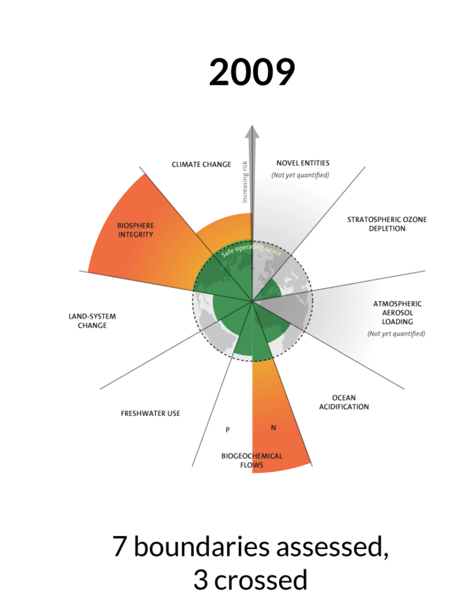
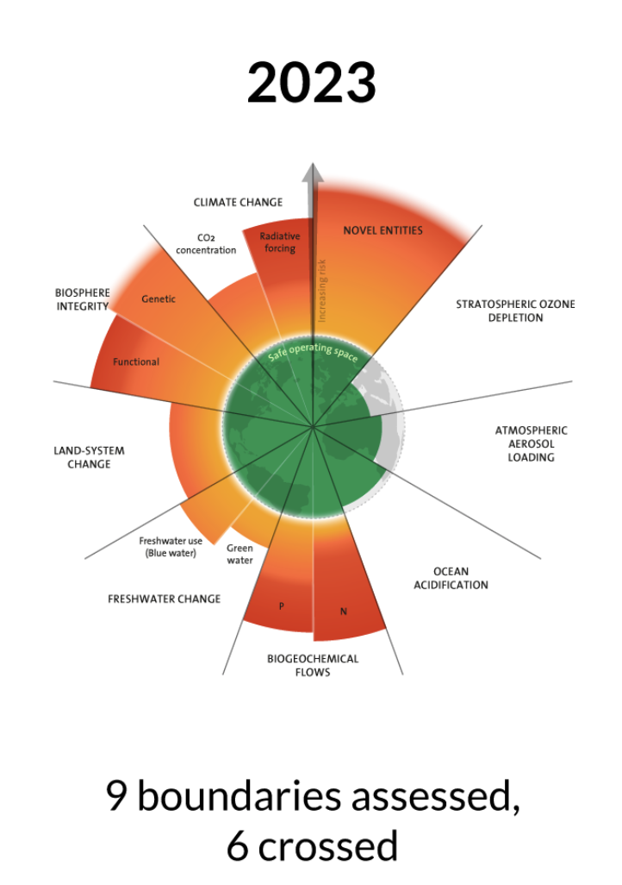
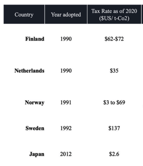

11 A Safe Operating Space for Humanity
11.1 Planetary Boundaries
The planetary boundaries framework highlights the rising risks from human pressure on nine critical global processes that regulate the stability and resilience of the Earth.
The planetary boundaries were first proposed in 2009 by a group of 28 internationally renowned scientists led by former center director Johan Rockström. Combining insights from many fields of global environmental change research, the framework highlights nine global change processes where human activities affect Earth system functioning. Planetary boundaries are quantitative assessments of the safe limits for human pressure on these nine critical processes.
Planetary boundaries are interdependent. The long-term large-scale stability of the past, which allowed human societies to develop and thrive, comes from the complex interactions of biophysical processes within the Earth system. This means we cannot consider planetary boundaries in isolation in any decision-making on sustainability. Action that affects one process in the planetary boundaries framework will affect the risks of the other processes. Only by respecting all nine boundaries can we maintain the safe operating space for humanity.
11.1.1 Planetary boundaries in 2009

11.1.2 Planetary boundaries in 2015

11.1.3 Planetary boundaries in 2023

11.1.4 Planetary boundaries in 2025
This planetary boundaries framework update finds that seven of the nine boundaries are transgressed, suggesting that Earth is now well outside of the safe operating space for humanity.

Source: https://www.stockholmresilience.org/research/planetary-boundaries.html
11.2 The nine planetary boundaries and their status
11.2.1 Climate change:
Increased greenhouse gases and aerosols in Earth’s atmosphere trap heat that would otherwise escape into space. The climate change planetary boundary assesses the change in the ratio of incoming and outgoing energy of the Earth. More carbon dioxide in the atmosphere and more trapped radiation causes global temperatures to rise and alters climate patterns. This boundary is transgressed, and CO2 concentrations are rising.
Example: The Keeling Curve is a graph of the annual variation and overall accumulation of carbon dioxide in the Earth’s atmosphere based on continuous measurements taken at the Mauna Loa Observatory on the island of Hawaii from 1958 to the present day. The curve is named for the scientist Charles David Keeling, who started the monitoring program and supervised it until his death in 2005.

Keeling’s measurements showed the first significant evidence of rapidly increasing carbon dioxide (CO2) levels in the atmosphere. According to Naomi Oreskes, Professor of History of Science at Harvard University, the Keeling curve is one of the most important scientific works of the 20th century. Many scientists credit the Keeling curve with first bringing the world’s attention to the current increase of CO2 in the atmosphere.
11.2.2 Novel entities:
Technological developments introduce novel synthetic chemicals into the environment, mobilize materials in wholly new ways, modify the genetics of living organisms, and otherwise intervene in evolutionary processes and change the functioning of the Earth system. The amount of synthetic substances released into the environment without adequate safety testing places novel entities in the high-risk zone.
11.2.3 Stratospheric ozone depletion:
Ozone high in the atmosphere protects life on Earth from incoming ultraviolet radiation. The thinning of the ozone layer, primarily due to human-made chemicals, allows more harmful UV radiation to reach Earth’s surface. Total ozone is slowly recovering because of the international phasing-out of ozone-depleting substances since the late 1980s. Ozone depletion is therefore currently in the Safe Operating Space.
11.2.4 Atmospheric aerosol loading:
Changes in airborne particles from human activities and natural sources influence the climate by altering temperature and precipitation patterns. Although large-scale air pollution already causes changes to monsoon systems, forest biomes and marine ecosystems, the global metric used in the planetary boundaries framework – interhemispheric difference in atmospheric aerosol loading – places this process just within the Safe Operating Space.
11.2.5 Ocean acidification:
The acidity of ocean water increases (its pH decreases) as it absorbs atmospheric CO2. This process harms organisms that need calcium carbonate to make their shells or skeletons, impacting marine ecosystems, and it reduces the ocean’s efficiency in acting as a carbon sink. The 2025 Planetary Health Check showed that the Ocean Acidification boundary has been breached for the first time. Since the start of the industrial era, the ocean’s surface pH has fallen by around 0.1 units, a 30-40% increase in acidity, pushing marine ecosystems beyond safe limits and degrading the oceans’ ability to act as Earth’s stabiliser.
11.2.6 Modification of biogeochemical flows:
Nutrient elements like nitrogen and phosphorus are crucial for supporting life and maintaining ecosystems. Industrial and agricultural processes disrupt natural cycles and modify the nutrient balance for living organisms. This boundary is transgressed, because both the global phosphorus flow into the ocean and the industrial fixation of nitrogen (converting stable nitrogen from the atmosphere into bioreactive forms) have disrupted global biogeochemical flows.
11.2.7 Freshwater change:
The alteration of freshwater cycles, including rivers and soil moisture, impacts natural functions such as carbon sequestration and biodiversity, and can lead to shifts in precipitation levels. Human-induced disturbances of both blue water (e.g. rivers and lakes) and green water (i.e. soil moisture) have exceeded the planetary boundary.
11.2.8 Land system change:
The transformation of natural landscapes, such as through deforestation and urbanization, disrupts habitats and biodiversity and diminishes ecological functions like carbon sequestration and moisture recycling. Globally, the remaining forest areas in tropical, boreal, and temperate biomes have fallen below safe levels.
11.2.9 Biosphere integrity:
The diversity, extent, and health of living organisms and ecosystems affects the state of the planet by co-regulating the energy balance and chemical cycles on Earth. Disrupting biodiversity threatens this co-regulation and dynamic stability. Both the loss of genetic diversity and the decline in the functional integrity of the biosphere are outside safe levels.
11.3 The “safe and just space” doughnut
The Doughnut, or Doughnut economics, is a visual framework for sustainable development – shaped like a doughnut or lifebelt – combining the concept of planetary boundaries with the complementary concept of social boundaries. The name derives from the shape of the diagram, i.e. a disc with a hole in the middle. The centre hole of the model depicts the proportion of people that lack access to life’s essentials (healthcare, education, equity and so on) while the crust represents the ecological ceilings (planetary boundaries) that life depends on and must not be overshot. The diagram was developed by University of Oxford economist Kate Raworth in her 2012 Oxfam paper A Safe and Just Space for Humanity and elaborated upon in her 2017 book Doughnut Economics: Seven Ways to Think Like a 21st-Century Economist and paper.


11.4 Economic intervention to improve the condition
11.4.1 A carbon tax
A carbon tax works by taxing fossil fuels in proportion to carbon content. Per unit of energy, coal is taxed more heavily than oil and natural gas, while non-fossil-fuel sources of energy are untaxed. Burning fuel containing a given quantity of carbon leads predictably and unavoidably to a given amount of carbon dioxide emissions, so that a tax on the carbon content of fuels is almost equivalent to taxing carbon dioxide emissions themselves. With the exception of carbon-capture-and-storage technologies that may shortly become available for power stations no viable end-of-pipe cleaning technologies for carbon dioxide emissions are currently available.
Taxing carbon would encourage energy users to substitute away from high-carbon energy sources towards fuels with lower emissions per unit of energy. If levied on the fuels used by power stations, for example, a carbon tax would encourage a shift away from power generation using coal towards oil and gas, and even more strongly towards untaxed renewables (wind and wave power), and towards nuclear energy.

- Suppose that a carbon tax T is added into the price. For a given quantity, the supplier’s price will be the old price plus the amount of the tax, and the supply curve will shift up to S*. The new equilibrium is at point B, the quantity is the target Q1, and the price will increase to P1.
11.4.2 Carbon tax in Japan
In October 2012, Japan introduced Carbon tax. Japan is one of the first Asian countries to implement a carbon tax. With a tax rate of JPY289/ t-CO2 ($2.65), Japan is set to attain 26% reduction in carbon emissions by 2030.
Japan, a signatory to the 2015 Paris Agreement, has been active in implementing measures to reduce its carbon emissions. In 2012 Japan passed a carbon tax of JPY 2,89/ t-Co2 ($2.65) which led to carbon emissions lower than 1990s levels (Ministry of Environment, 2019).
The carbon tax is an additional tax over and above the existing Oil and Coal Tax, which covers oil, natural gas and coal (electricity excluded). The tax rates for the three types of energy are different. Natural gas is taxed the highest rate, followed by fossil fuel, and coal. To mitigate the impact on the industry, Japan adopted a three-stage tax increase.

However, this target is substantially lower than one recommended by environmental scientists, 76% reduction in carbon emissions by 2030 (UNFCCC, 2019).
